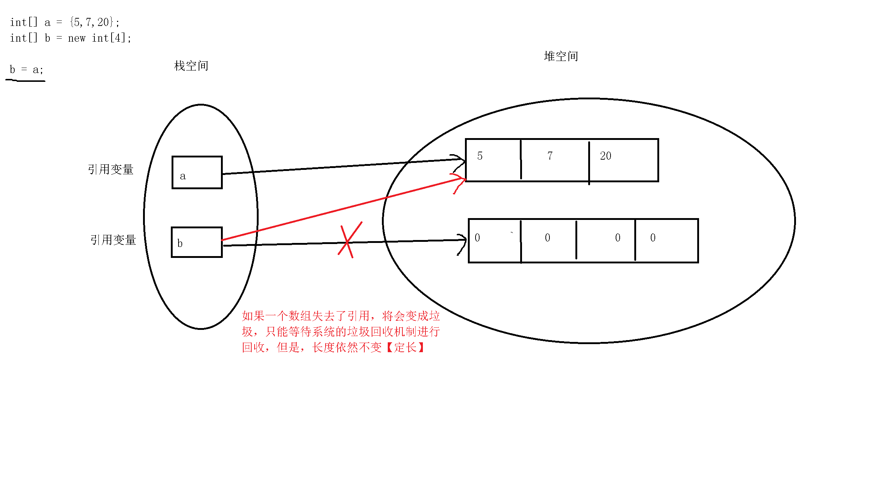
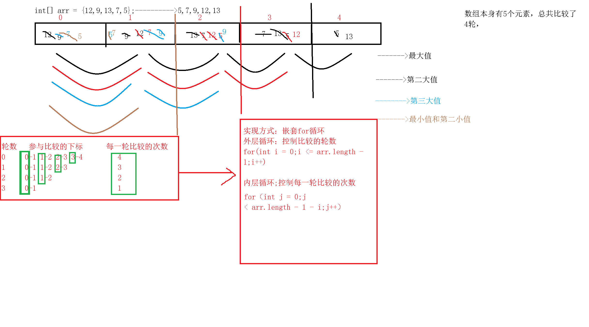
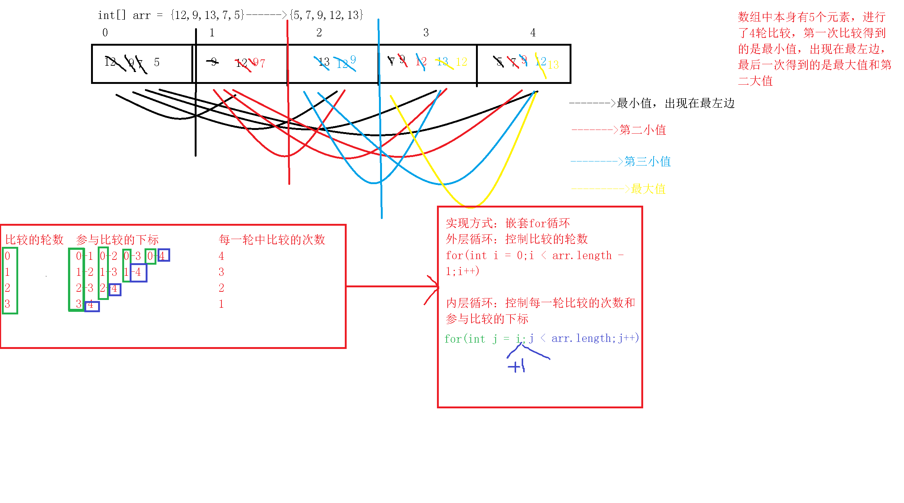
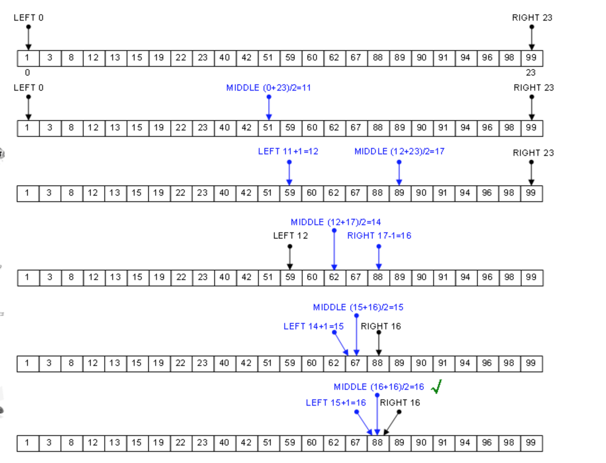

1.开发工具eclipse的介绍2.数组的声明和初始化3.数组的元素访问以及遍历4.数组的应用(冒泡排序、选择排序、顺序查找和二分法查找)5.Arrays工具类的使用6.可变参数的应用
xxxxxxxxxx1.了解eclipse工具的基本使用2.掌握数组的声明和初始化3.掌握数组的使用4.掌握数组的排序和查找5.了解Arrays工具类的使用6.了解可变参数的使用
xxxxxxxxxx工作空间（workspace）,是用户在同一个工程中（或者是一个事务）工作环境的集合,简单来说，就是项目存放的位置就是你项目存放的位置：项目，文件，文件夹工作空间有明显的层次结构。项目在最顶级，项目里头可以有文件和文件夹
xxxxxxxxxxctrl+D：删除一行ctrl+shift+f：格式化代码ctrl+S：保存文件ctrl+shift+o：导包ctrl+alt+方向键上下键：向上或向下复制alt+方向键的上下键：向上或向下移动alt+shift+j：文档注释ctrl+/：单行注释ctrl+/：取消单行注释ctrl+shift+/：多行注释ctrl+shift+\:取消多行注释shift+enter：强制换行ctrl+f11:运行
xxxxxxxxxx可参考http://www.runoob.com/eclipse/eclipse-create-java-project.html
x方式一：数据类型[] 数组名方式二：数据类型 数组名[]推荐使用方式一，c#等越来越多的语言已经不支持方式二定义数组
xxxxxxxxxxJava中的数组必须先初始化，然后才可以使用，所谓初始化，就是为数组中的数组元素分配内存空间，并为每个数组元素赋初始值
2.2.1 静态初始化
xxxxxxxxxx初始化时由程序员指定每个数组元素的初始值，由系统计算数组长度语法：数组元素类型[] 数组名 = new 数组元素类型[]{元素0，元素1,....};可简写为：数组元素类型[] 数组名 = {元素0，元素1,....};说明：任何一个变量都得有自己的数据类型，这里的arr表示数组变量名称，int表示数组中元素的类型，int[]才是数组类型
代码实现：
xxxxxxxxxx /* 静态初始化:由我们指定元素的初始值，由系统计算长度或者元素的个数 */ int[] arr = new int[]{1,56,76,87}; int[] arr1 = {1,56,76,87}; String[] arr2 = new String[]{"434","gfg","gjf545"}; String[] arr3 = {"434","gfg","gjf545"}; //Scanner[] arr4 = char[] arr5 = new char[]{'2','g','*'}; char[] arr5 ={'2','g','*'};2.2.2 动态初始化
xxxxxxxxxx初始化时程序员只指定数组长度，由系统为数组元素分配初始值语法：元素类型[] 数组名 = new 元素类型[元素个数或者数组长度]；系统对初始值分配规则如下：a.整数型为0b.浮点型为0.0c.字符型为‘\u0000’(不同的系统平台显示结果不同)d.布尔类型为falsee.引用类型为null
代码实现：
xxxxxxxxxx /* 动态初始化：初始化时由程序员指定数组的长度，系统负责分配元素的初始值 */ int[] array1 = new int[5];//0 String[] array2 = new String[3];//null char[] array3 = new char[10];//\u0000 /* int x = 4; x在栈空间中开辟空间 4为常量，存储在常量池中 char[] array3 = new char[10]; 方法压栈： array3是一个变量名称 array3也是在栈空间中开辟空间的 通过new关键字创建出来的数组存储在堆空间中 array3其实就是一个引用，指向了一个真正的数组 */xxxxxxxxxx注意：a.在初始化数组时，不要静态初始化和动态初始化同时使用，也就是说，不要在进行数组初始化时，既指定数组的长度，也为每个数组元素分配初始值b.既然数组也是一种数据类型，则在初始化的时候也可以先声明，再初始化例如：int[] scores;scores = new int[3];
2.3.1 通过下标访问指定元素
xxxxxxxxxx注意：Java语言的数组索引是从0开始的
代码实现：
xxxxxxxxxx //使用静态初始化的方式定义一个数组 //数组中可以存放重复数据 int[] arr1 = new int[]{2,65,76,83,32,5,5}; //1.访问数组中的元素 //格式：数组名称[下标] 表示获取指定下标所对应的值 //需求：获取下标3对应的元素 int num1 = arr1[3]; System.out.println(num1);//83 System.out.println(arr1[3]);//83 2.3.2 获取数组元素的个数
xxxxxxxxxx在Java中，所有数组都提供了一个length属性，通过这个属性可以访问到数组的长度或者数组中元素的个数
代码实现：
xxxxxxxxxx //2.获取数组中的元素个数或者数组的长度 //格式:数组名称.length; int len = arr1.length; System.out.println("数组arr1的长度为：" + len); 2.3.3 修改数组元素的值
代码实现：
xxxxxxxxxx //3.修改数组元素的值 int num2 = arr1[6]; System.out.println(num2);//5 num2 = 100; System.out.println(num2);//100 System.out.println(arr1[6]);//5 //格式：数组名称[下标] = 被修改之后的值 //注意：不管是静态初始化还是动态初始化，都可以采用这种方式修改元素的值 arr1[6] = 100; System.out.println(arr1[6]);//1002.3.4 遍历数组
xxxxxxxxxx依次访问数组中的每一个元素，获取每个下标对应的元素值方式一：简单for循环方式二：增强for循环
代码实现：
xxxxxxxxxx //4.遍历数组 int n0 = arr1[0]; int n1 = arr1[1]; int n2 = arr1[2]; int n3 = arr1[3]; int n4 = arr1[4]; int n5 = arr1[5]; int n6 = arr1[6]; //1>简单for循环 //i表示下标，0~arr1.length for(int i = 0;i < arr1.length;i++) { int n = arr1[i]; System.out.println(n); } /* 2>增强for循环【foreach】 JDK1.5之后新增的 优点：用于遍历数组和集合，无需通过数组下标，就可以直接访问数组或者集合中的元素 语法： for(元素数据类型 变量名：数组名称) { System.out.println(变量名); } */ //底层工作原理：根据下标获取数组元素 for(int num : arr1) { System.out.println("增强for循环的结果：" + num); } /* 两种遍历方式的选择：不需要知道下标，只需要获取元素值，则采用增强for循环 */ //需求：打印下标为偶数的元素值【只能采用简单for循环】 for(int i = 0;i < arr1.length;i++) { if(i % 2 == 0) { int n = arr1[i]; System.out.println(n); } }2.3.5 内存中的数组
xxxxxxxxxx数组引用变量只是一个引用，这个引用变量可以指向任何有效的内存空间，只有当这个引用指向有效的空间时，才可以通过引用去操作真正数组中的元素结论：数组的引用变量存储在栈空间中，而真正的数组存储在堆空间在中
代码实现：
xxxxxxxxxxclass ArrayUsageDemo04 { public static void main(String[] args) { //使用静态初始化的方式初始化一个数组a int[] a = {5,7,20}; System.out.println("a的长度为：" + a.length);//3 //使用动态初始化的方式初始化一个数组b int[] b = new int[4]; System.out.println("b的长度为：" + b.length);//4 b = a; System.out.println("a的长度为：" + a.length);//3 System.out.println("b的长度为：" + b.length);//3 String[] arr = new String[3]; }}画图分析：

xxxxxxxxxx扩展：基本数据类型和引用数据类型在内存中的区别思考问题：int a = 10;int b = a;b = 20;a = ? -------->10,而且a和b都存储在栈空间中int[] x = {22,33};int[] y = x;y[0] = 55;x[0] = ?--------->55,x和y都存储在栈空间中，但是真正的数组存储在堆空间中扩展：内存的分类a.寄存器：最快的存储区域，由编译器根据需求进行自动的分配，我们在程序中无法控制b.栈：存放的是基本数据类型的变量以及引用数据类型变量的引用特点：被执行之后，该函数或者变量所占用的空间会被销毁【方法压栈】c.堆：存放所有使用new关键字创建出来的实体特点:执行完不会立即被释放，当使用完成之后，会被标记上垃圾的标识，等待系统的垃圾回收机制来回收它d.方法区：常量池：存放基本数据类型的常量和字符串常量静态域：static，静态全局变量
2.3.6 使用数组时常见的问题
xxxxxxxxxx1>数组越界异常：ArrayIndexOutofBoundsException出现的时机：当使用了不存在的下标时，则会出现这个错误0~length - 12>空指针异常：NullPointerException出现的时机：当数组的引用变量赋值为null，还在后面的代码中使用这个引用3>基本数据类型和引用数据类型打印的区别
代码实现：
xxxxxxxxxxclass ArrayUsageDemo03{ public static void main(String[] args) { //1.数组越界 int[] arr1 = new int[]{2,65,76,83,32,5,5}; /* Exception in thread "main" java.lang.ArrayIndexOutOfBoundsException: 8 at ArrayUsageDemo03.main(ArrayUsageDemo03.java:6) */ //System.out.println(arr1[8]); //2.空指针异常 System.out.println(arr1[3]); //arr1 = null; /* Exception in thread "main" java.lang.NullPointerException at ArrayUsageDemo03.main(ArrayUsageDemo03.java:16) */ //System.out.println(arr1[3]); //3.基本数据类型和引用数据类型打印的区别 int x = 4; System.out.println(x);//4 System.out.println(arr1);//[I@15db9742 /* 打印引用数据类型的引用变量时，拿到的是地址 [I@15db9742 [ ----- 数组 I ----- int【Integer】 @ ------ 地址 15db9742 ----- 十六进制，地址值的哈希编码【哈希算法】 打印： 基本数据类型：数值 引用数据类型：地址值 */ float[] arr2 = new float[10]; System.out.println(arr2);//[F@6d06d69c String[] arr3 = new String[10]; System.out.println(arr3);//[Ljava.lang.String;@7852e922 }}2.4.1 冒泡排序
xxxxxxxxxx排序思路：比较两个相邻的下标对应的元素，如果符合条件就交换位置（最值出现在最后位）
画图分析
代码实现：
xxxxxxxxxxclass ArraySortedDemo01 { public static void main(String[] args) { int[] arr = {23,54,65,3,5,2,87}; //以升序为例 //外层循环：控制比较的轮数 for(int i = 0;i < arr.length - 1;i++) { //内层循环：控制每一轮比较的次数和参与比较的下标 for(int j = 0;j < arr.length - 1 - i;j++) { if(arr[j] > arr[j + 1]) { //交换位置 int temp = arr[j]; arr[j] = arr[j + 1]; arr[j + 1] = temp; } } } for(int num:arr) { System.out.println(num); } }}2.4.2 选择排序
xxxxxxxxxx排序思路：固定一个下标，然后拿这个下标对应的值依次和后面的元素进行比较
画图分析：

代码实现：
xxxxxxxxxxclass ArraySortedDemo02 { public static void main(String[] args) { int[] arr = {23,54,65,3,5,2,87}; //以升序为例 //外层循环：控制比较的轮数 for(int i = 0;i < arr.length - 1;i++) { //内层循环:控制每一轮比较的次数，参与比较的下标 for(int j = i + 1;j < arr.length;j++) { //交换位置 if(arr[i] > arr[j]) { int temp = arr[i]; arr[i] = arr[j]; arr[j] = temp; } } } for(int num:arr) { System.out.println(num); } }}2.5.1 顺序查找
xxxxxxxxxx查找思路：遍历这个数组，依次把每一位元素和要查找的数据进行比较
代码实现：
xxxxxxxxxxclass ArraySearchDemo01{ public static void main(String[] args) { int[] arr = {23,54,65,3,5,2,87}; //需求：查找65在数组中的位置 int key = 65; for(int i = 0;i < arr.length;i++) { if(key == arr[i]) { System.out.println(i); } } }}2.5.2 二分法查找
xxxxxxxxxx查找思路：前提是数组是有序（升序或者降序）的，通过折半来缩小查找范围，提高查找效率将待查找的元素与中间下标对应的元素比较，如果大于中间下标对应的元素，则去右半部分查找
画图分析：

代码实现：
xxxxxxxxxxclass ArraySearchDemo02 { public static void main(String[] args) { int[] arr = {12,43,54,65,87,88,90,343}; //待查找的元素 int key = 88; //相应的下标 int left = 0; int right = arr.length - 1; while(left <= right) { //中间下标 int middle = (left + right) / 2;//取整 if(arr[middle] > key) { right = middle - 1; } else if(arr[middle] < key) { left = middle + 1; } else { System.out.println(middle); break; } } }}xxxxxxxxxx作用：主要用于对数组进行排序，查找，填充，比较等的操作Arrays工具类存在于java.util包下，所以使用的第一步就是导包：import java.util.Arrays;注意1：如果在同一个Java文件中同时使用Scanner和Arrays，则可以向如下方式导包： import java.util.Scanner; import java.util.Arrays; 或者简写为： import java.util.*;注意2：但凡是工具类，类中的方法全部是静态的，方便调用 调用语法：类名.方法名（实参列表）代码实现：
xxxxxxxxxx//演示Arrays工具类的使用import java.util.*;class ArraysUsageDemo { public static void main(String[] args) { //使用动态初始化的方式初始化一个数组 int[] arr = new int[10]; //1.填充 /* static void fill(int[] a, int val) 将指定的 int 值分配给指定 int 型数组的每个元素。 static void fill(int[] a, int fromIndex, int toIndex, int val) 将指定的 int 值分配给指定 int 型数组指定范围中的每个元素。 */ /* for(int n:arr) { System.out.print(n); } */ //Arrays.fill(arr,10); //Java但凡涉及到区间问题，一般规律：包头不包尾 前闭后开区间 Arrays.fill(arr,2,6,56);//0~arr.length - 1 //2.排序 /* static void sort(int[] a) 对指定的 int 型数组按数字升序进行排序。 static void sort(int[] a, int fromIndex, int toIndex) 对指定 int 型数组的指定范围按数字升序进行排序。 */ //注意：默认情况下只能进行升序排序 int[] arr1 = {43,2,65,1,45,9898,989}; Arrays.sort(arr1); //Arrays.sort(arr1,2,5);//[2,5) //3.二分法查找 //前提：必须是排好序的数组 /* static int binarySearch(int[] a, int key) 使用二分搜索法来搜索指定的 int 型数组，以获得指定的值。 static int binarySearch(int[] a, int fromIndex, int toIndex, int key) 使用二分搜索法来搜索指定的 int 型数组的范围，以获得指定的值。 */ /* 1 2 43 45 65 989 9898 */ int key = 45; int result1 = Arrays.binarySearch(arr1,key); System.out.println(result1);//3 int result2 = Arrays.binarySearch(arr1,20); //规律：按照原来的顺序将待查找的元素插入到原数组中的下标，对下标加1然后求相反数 System.out.println(result2); //4.拷贝 /* static int[] copyOf(int[] original, int newLength) 复制指定的数组，截取或用 0 填充（如有必要），以使副本具有指定的长度。 static int[] copyOfRange(int[] original, int from, int to) 将指定数组的指定范围复制到一个新数组。 */ int[] newArr1 = Arrays.copyOf(arr1,3); int[] newArr2 = Arrays.copyOfRange(arr1,2,6); //5.将数组转换为字符串 System.out.println(arr1);//[I@15db9742 /* static String toString(int[] a) 返回指定数组内容的字符串表示形式。 */ System.out.println(Arrays.toString(arr1));//[1, 2, 43, 45, 65, 989, 9898] //6.比较数组 /* static boolean equals(int[] a, int[] a2) 如果两个指定的 int 型数组彼此相等，则返回 true。 */ /* 如果两个指定的 int 型数组彼此相等，则返回 true。 如果两个数组包含相同数量的元素，并且两个数组中的所有相应元素对都是相等的，则认为这两个数组是相等的。 换句话说，如果两个数组以相同顺序包含相同的元素，则两个数组是相等的。 此外，如果两个数组引用都为 null，则认为它们是相等的 */ int[] array1 = {1,54,76}; int[] array2 = {1,54,76}; System.out.println(Arrays.equals(array1,array2));//true System.out.println(array1 == array2);//false /* 总结： ==和equals ==：是一个运算符，可以比较基本数据类型和引用数据类型【当比较引用数据类型的时候，比较的地址值】 比较String类型的变量，采用equals String str1 = ""; String str2 = ""; 比较方式：str1.equals(str2); equals：是一个方法，只能比较引用数据类型 【补充：如果equals方法在一个类中没有没重新实现，则equals方法的作用和==一样，都比较的是地址值 如果equals方法在一个类中被重新实现，则比较的是内容 】 */ for(int n:newArr1) { System.out.println(n); } }}xxxxxxxxxx不定长参数在设计方法时，方法的形参的个数是不确定的语法类型... 变量名称例如：int... num
代码实现：
xxxxxxxxxx//演示不定长参数的使用class PramaUsageDemo { public static void main(String[] args) { int result = add(2,5,65,76,87,98,9); System.out.println(result); //2.对于一个方法的参数是不定长参数时，实参可以直接传一个数组 int[] arr = {2,5,65,76,87,98,9}; System.out.println(add(arr));//num = arr; text1(10,"hello",1,545,656); //text1(1,545,656,"hello"); } //需求：计算不确定个整数的和 public static int add(int... num) { //1.不定长的参数在进行使用的时候被当做数组来进行处理 //num其实就相当于一个数组的引用变量 int sum = 0; for(int n :num) { sum += n; } return sum; } //3.不定长参数在使用的时候，必须出现在参数列表的最后一个 //4.在同一个参数列表中，不定长参数只能出现一次 public static void text1(int num1,String s,int... num) { }}xxxxxxxxxx注意：a.不定长的参数在进行使用的时候被当做数组来进行处理b.不定长参数在使用的时候，必须出现在参数列表的最后一个c.对于一个方法的参数是不定长参数时，实参可以直接传一个数组xxxxxxxxxx1.熟练掌握eclipse的基本使用2.熟练掌握数组的基本用法3.熟练掌握数组的排序和查找方式4.了解Arrays工具类和可变参数的使用xxxxxxxxxx1.使用if语句实现判断一个数是否是5的倍数2.根据键盘输入的数字，打印对应的星期（注：可以不全写）3.求50~200之间所有整数的和
xxxxxxxxxx初级1.定义一个函数，获取某个数组中的最小值2.定义一个数组,数组成员10个,找出数组中最大数连同下标一起输出3.给定一个整型数组，数组成员10个,求该数组中第二大的数的下标4.B哥去参加青年歌手大奖赛,有10个评委打分,(去掉一个最高一个最低)求平均分?5.利用选择排序对数据进行降序排序6.定义数组，存放5个学生的成绩【成绩值自己设定】，将成绩从大到小排序，获得成绩之和，平均成绩，最小成绩，最大成绩。7.定义一个长度为10的int数组,统计数组中的最大值、最小值、以及奇数和偶数的个数8.提取一个方法，将指定数组中的数组元素进行反转例如：{10,23,2,45,6}--->{6,45,2,23,10}9.设计一个工具类，在工具类中设计以下方法： 1）计算两个数的乘积，当这两个数都不为0时正常计算，若有一个数为0那么在方法中声明一个运行时异常（提示：结果为0） 2）计算两个字符串所表示的整数的和，先判断字符串是否表示整数，若表示整数计算机过并输出，若字符串不表示整数在方法中声明一个非运行是异常（提示：字符串不能表示整数） 3）将两个Object对象连接在一起返回字符串，若这两个对象是包装类对象或字符串则将这两个对象连接，否则在方法中声明一个非运行是异常（提示：这两个对象不能链接）中级1.将一个数组逆序输出2.输入数组，最大的与第一个元素交换，最小的与最后一个元素交换，输出数组3.有一个已经排好序的数组。现输入一个数，要求按原来的规律将它插入数组中xxxxxxxxxx1.基本数据类型和引用数据类型之间的区别2.在java中，声明一个数组过程中，是如何分配内存的3.数组的静态和动态初始化有什么不同4.分别使用冒泡和选择对已知数组进行排序